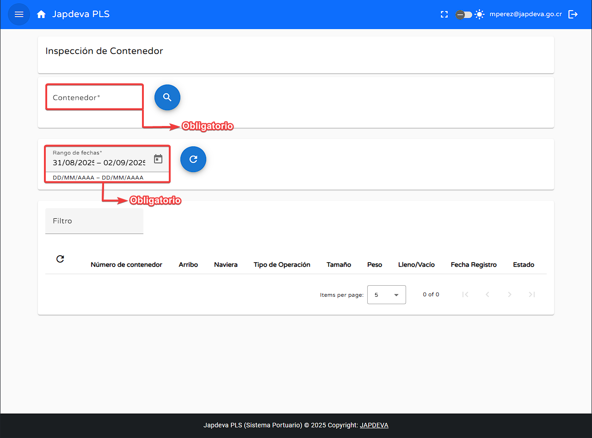

Bienvenido a la guía de usuario para la pantalla Inspección de Contenedor del sistema PLS. Esta guía está diseñada para ayudarte a utilizar y comprender de forma sencilla y directa las funcionalidades que ofrece esta pantalla.
La función principa de esta pantalla es reflejar mediante una forma ordenada y al detalle toda la información relevante relacionada con un contenedor en cierta ventana de tiempo definido.
Al brindarle el código de identificación del contenedor deseado y pulsar seguido a ello el botón de búsqueda podremos visualizar toda la información relevante a ese contenedor basado en la ventana de tiempo definida en conjunto a esta acción.
Primero antes que nada se debe dejar claro que la información a ver en la pantalla se encuentra ligada totalmente a la ventana de tiempo estipulada por el usuario y al contenedor deseado por el mismo, además de que la información proyectada es la más reciente almacenada en la base de datos.
La pantalla también ofrece la posibilidad de fiiltrar por cualquier atributo y refrescar la información en tiempo real permitiendo al usuario encontrar y visualizar datos actualizados de forma rápida y sencilla.
Como se puede observar la pantalla Inspección de Contenedor posee una tabla de datos como mucha información por eso en este apartado se explica de manera sencilla cada uno de estos atributos. (De izquierda a derecha).
Si necesitas ayuda adicional, contáctanos: